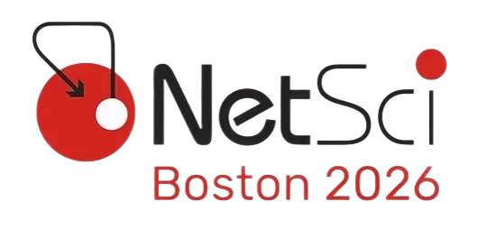
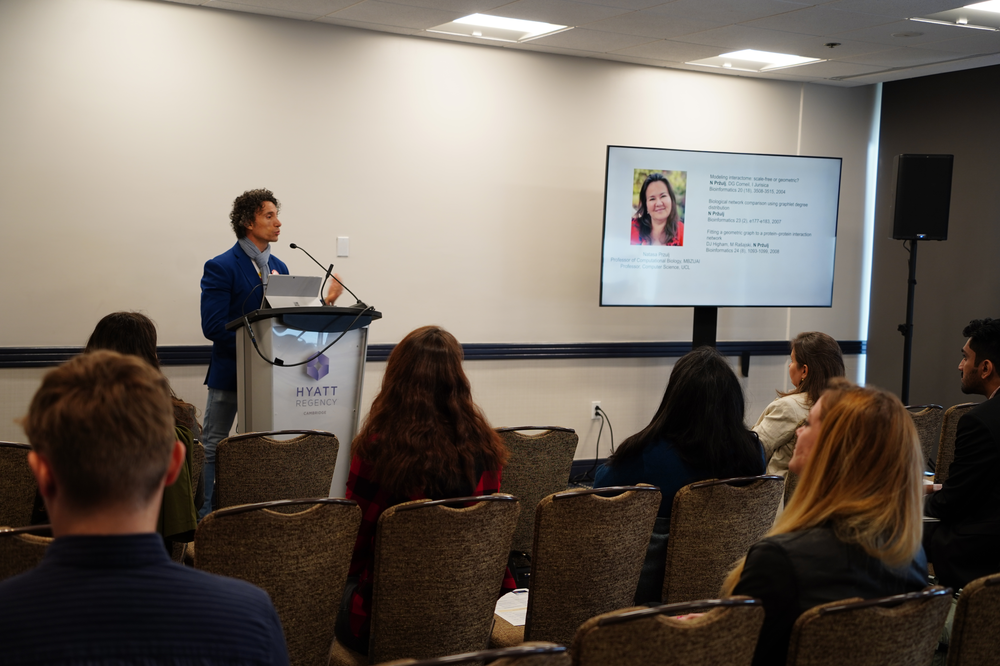
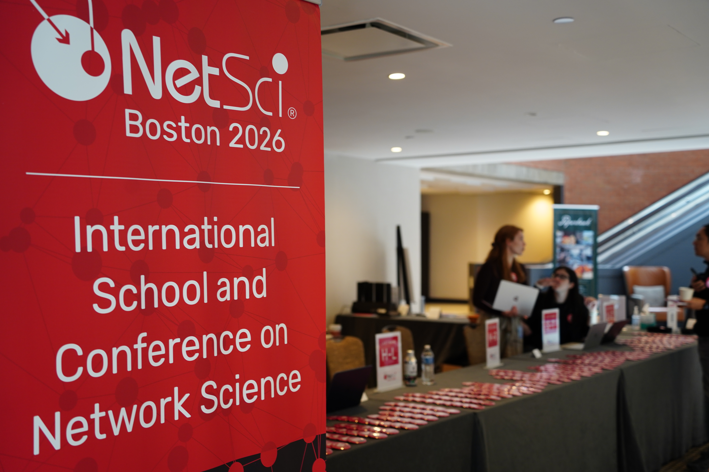
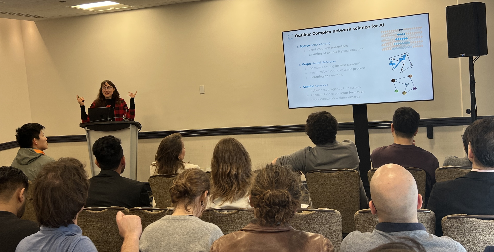
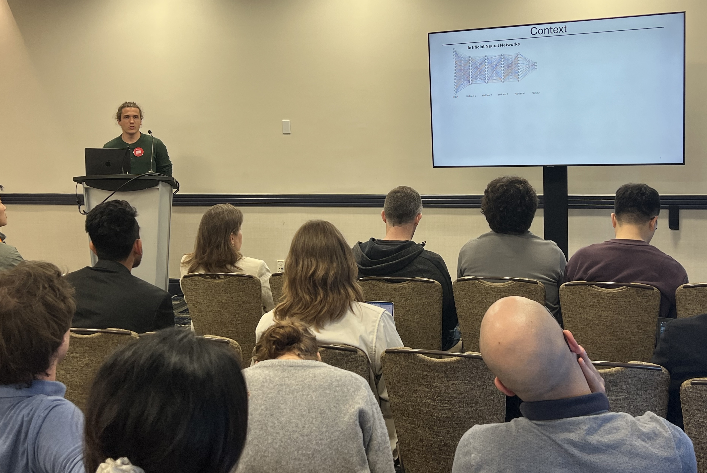
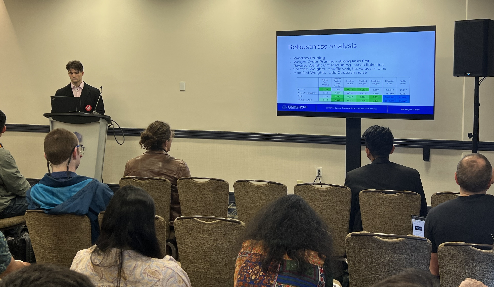
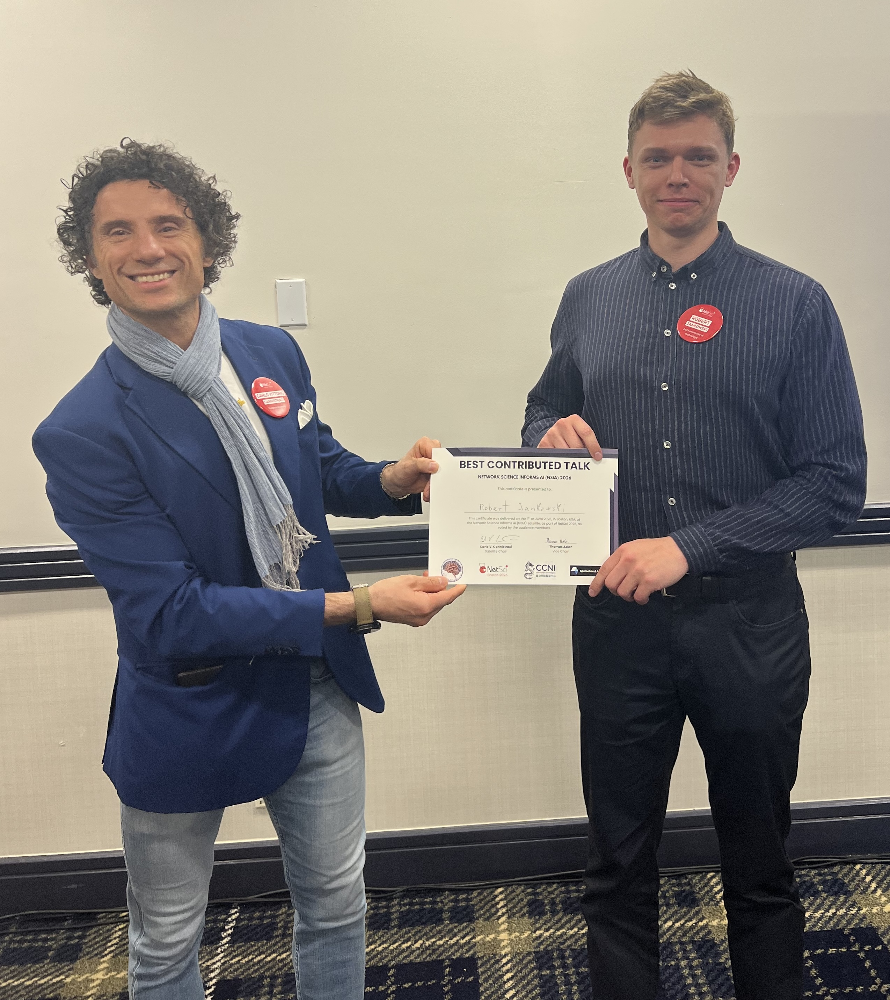
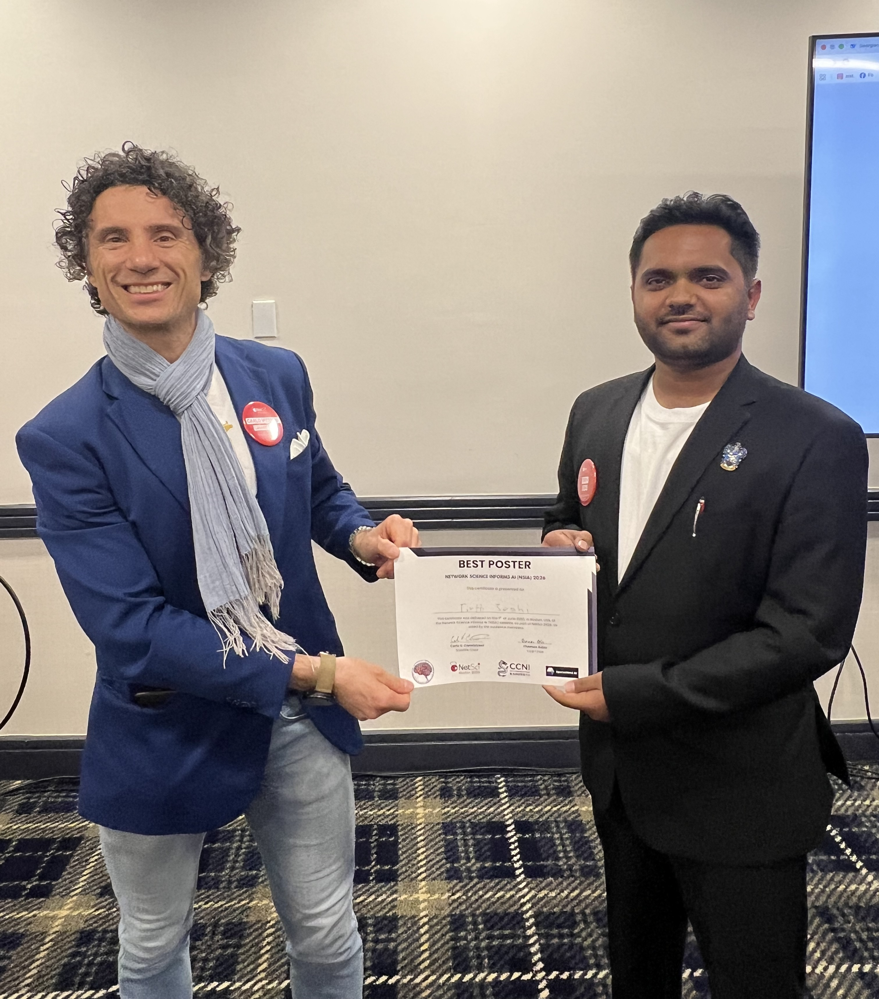
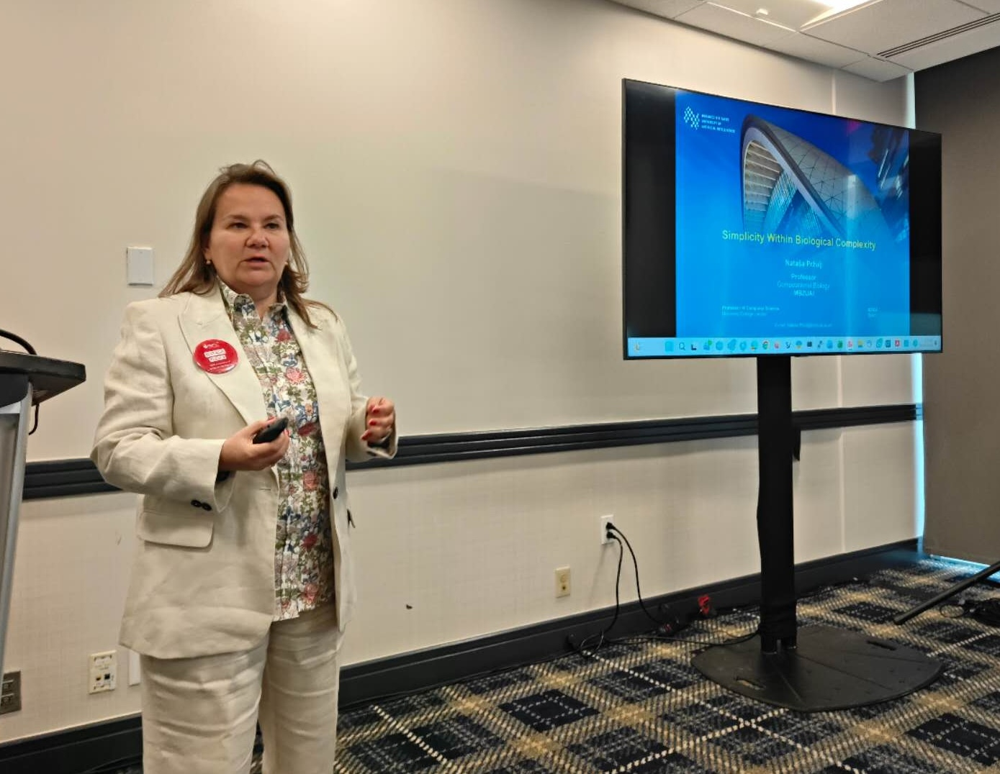
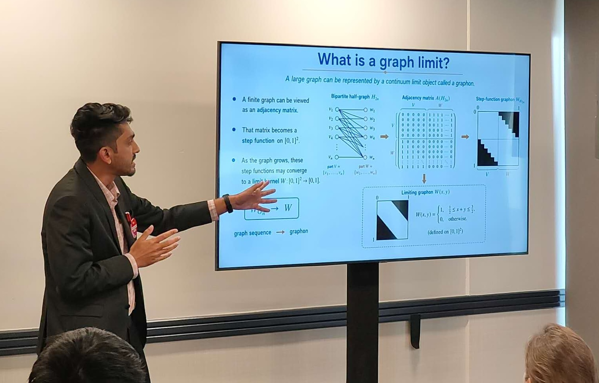

NSIA 2026 Archive
This page archives the inaugural edition of the Network Science Informs AI (NSIA) satellite, held on June 1st, 2026 in Boston, USA as part of NetSci 2026.
Event Details
The event was a great success, featuring a mix of invited speakers and contributed talks. More photos from the event are available here. You can also leave some feedback for the satellite at this form.
Date: Monday, June 1st, 2026
Time: 14:00 – 18:30
Satellite Location: Porter Square B, Hyatt Regency Boston/Cambridge
Poster Session: Amesbury Ballroom, Hyatt Regency Boston/Cambridge
Dinner: Held after the satellite at Amelia's Trattoria.
Organizers: The NSIA 2026 satellite was organized by members of the Center for Complex Network Intelligence (CCNI) from Tsinghua University and was sponsored by SparseMind AI.
#NSIA2026
Invited Speakers (alphabetical order)
Committees
Organizing Committee

Carlo Vittorio Cannistraci
Satellite Chair
Zhou Yahui Chair Professor and Chief Scientist
Director at the Center for Complex Network Intelligence (CCNI), Tsinghua Laboratory of Brain and Intelligence (THBI), Tsinghua University

Thomas Adler
Vice Chair
PhD student
Center for Complex Network Intelligence (CCNI), Tsinghua Laboratory of Brain and Intelligence (THBI), Tsinghua University

Diego Cerretti
Communications and Outreach Chair
Masters student
Center for Complex Network Intelligence (CCNI), Tsinghua Laboratory of Brain and Intelligence (THBI), Tsinghua University

Ilyes Abdelhamid
Postdoc
Center for Complex Network Intelligence (CCNI), Tsinghua Laboratory of Brain and Intelligence (THBI), Tsinghua University
Special Issue Committee
Lock Yue Chew
Guest Editor
Professor, Division of Physics & Applied Physics. Associate Dean (Students), College of Science
School of Physical & Mathematical Sciences, Nanyang Technological University
Technical Program Committee
Program Chairs:
- Carlo Vittorio Cannistraci (NSIA)
- Thomas Adler (NSIA)
- Lock Yue Chew (Special Issue)
Abstract Reviewers:
- Ruben Christon
- Cormac O'Brien
- Jiaqing Lyu
- Diego Cerretti
- Raghav Sharma
- Boyu Su
- Junda Chen
- Kangyou Bao
- Wenqi Gu
- Worawate Ausawalaithong
- Arsham Ghavasieh
- Hanming Li
Event Photos












